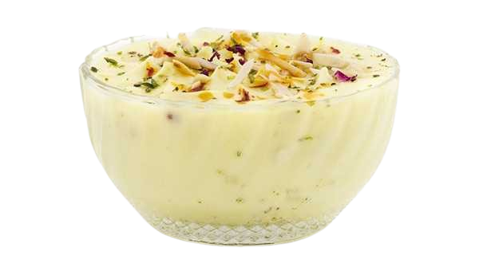

Our Dairy Products
Pure, Fresh & Nutritious Milk Products Direct from Our Farm to Your Family
Gold Milk
SKU Size: 500ml
₹28
₹38
Rich in Protein & Calcium | 6% Fat Content
Double Toned Milk
SKU Size: 500ml
₹25
Low Fat Content | High Nutrition | 3% Fat

Buffalo Milk
SKU Size: 1 L
₹68
Balanced Nutrition | 4.5% Fat | Fortified

Shrikhand
SKU Size: 500ml
₹120
₹122
Premium Grade | Enhanced Nutrition | 5% Fat

Malai dahi
SKU Size: 1 kg
₹80
Ultra Low Fat | Health Conscious | 1.5% Fat

Fresh Paneer
SKU Size: 250g
₹90
High Protein | Fresh Daily | No Preservatives

Pure Butter
SKU Size: 1 kg
₹610
Pure Cream Butter | Rich Taste | Natural

Pure Ghee
SKU Size: 1 kg
₹700
Traditional Method | Pure Cow Ghee | Rich Aroma

Mango shreikhand
SKU Size: 1 kg
₹280
Traditional Recipe | Refreshing | Natural